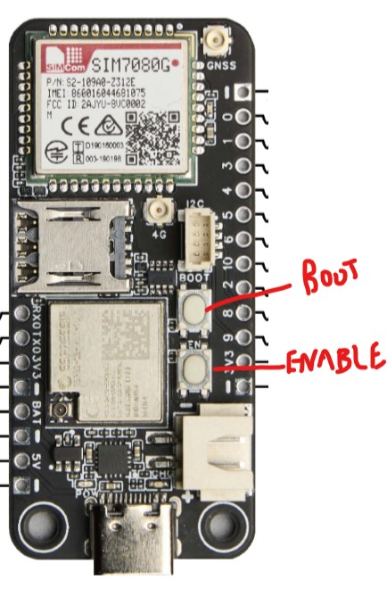

description carte

Build automatiquement en faisant upload - restart l'upload
L'overflow (dépassement) est un problème classique en programmation bas niveau,
notamment en C et dans l’IoT, où les ressources mémoire sont limitées.
Cela se produit lorsqu'une valeur dépasse la capacité de stockage d'un type de donnée.
Quand vous avez l'erreur que vous voyez : "Serial port COM3
A fatal error occurred: Could not open COM3, the port doesn't exist
*** [upload] Error 2
======================"
il faut appuyer sur la prise (fluo en jaune), ensuite choisir le nouveau com (en vert : "com4").
Ensuite upload.

La commande AT+CBC renvoie l’état de la batterie sous cette forme :
"
+CBC: batterie_status, niveau_batterie, voltage_mV
OK"
batterie_status :
0 = Non branché
1 = Chargement
2 = Chargé
niveau_batterie : Pourcentage de la batterie (0 à 100)
voltage_mV : Tension de la batterie en millivolts (mV)
build_flags =
-I../lib
-I../lib/gnss
-I../lib/power
-I../lib/timestamp
-I../lib/serial
-I../lib/argali
build_flags va servir à ne pas remettre le chemin relatif de nos dossiers à chaque fois
Oui, tu peux définir plusieurs pointeurs qui pointent vers la même variable. Cela signifie que si tu modifies la valeur via l’un des pointeurs, tous les autres la verront aussi !
#include <stdio.h>
int main() {
int nombre = 42; // Déclare une variable normale
int *ptr1 = &nombre; // Premier pointeur
int *ptr2 = &nombre; // Deuxième pointeur
printf("Avant modification : %d\n", nombre);
*ptr1 = 99; // Modification via ptr1
printf("Après modification via ptr1 : %d\n", nombre);
printf("Valeur via ptr2 : %d\n", *ptr2); // ptr2 voit aussi la mise à jour
return 0;
}
1️⃣ Création de la variable : int nombre = 42;
2️⃣ Déclaration de deux pointeurs : ptr1 et ptr2 stockent l’adresse de nombre.
3️⃣ Modification via ptr1 : *ptr1 = 99; change directement la valeur de nombre.
4️⃣ Affichage avec ptr2 : Il affiche aussi 99, car il pointe sur la même adresse.
Avant modification : 42
Après modification via ptr1 : 99
Valeur via ptr2 : 99
✅ Plusieurs pointeurs peuvent partager la même adresse en mémoire. Toute modification via l’un d’eux impacte directement la variable pointée.
En C, utiliser des pointeurs dans les fonctions offre plusieurs avantages, notamment :
Sans pointeur, la fonction copie la variable, donc elle ne la modifie pas réellement :
int incrementer(int x) {
x += 1;
return x;
}
Avec un pointeur, la fonction modifie directement la variable en mémoire :
void incrementer(int *x) {
*x += 1;
}
Sans pointeur, la `struct` est copiée :
void afficherPoint(Point p) {
printf("Point (%d, %d)\n", p.x, p.y);
}
Avec un pointeur, on évite la copie (plus rapide) :
void afficherPoint(Point *p) {
printf("Point (%d, %d)\n", p->x, p->y);
}
Sans pointeur, une fonction ne peut retourner qu'une seule valeur :
int somme(int a, int b) {
return a + b;
}
Avec des pointeurs, on peut retourner plusieurs valeurs :
void calculer(int a, int b, int *somme, int *difference) {
*somme = a + b;
*difference = a - b;
}
En C, une fonction ne peut pas retourner un tableau directement :
// Impossible : int tableau[5]; return tableau; // ERREUR
Mais avec un pointeur, c’est possible :
int* creerTableau(int taille) {
int *tab = (int*) malloc(taille * sizeof(int));
return tab;
}
| Cas d’usage | Sans pointeur | Avec pointeur |
|---|---|---|
| Modifier une variable | Copie, pas de modification directe | Modifie directement la valeur |
| Passer une `struct` | Copie complète (lent) | Passe l'adresse (rapide) |
| Retourner plusieurs valeurs | Impossible | Possible avec plusieurs pointeurs |
| Retourner un tableau | Impossible | Possible avec un pointeur |
💡 En résumé :
Tu veux un exemple plus avancé avec gestion mémoire et objets dynamiques ? 🚀😊
#include <stdio.h>
// Fonction secondaire qui modifie la variable
void ajouter10(int *ptr) {
printf("[ajouter10] Adresse reçue : %p, Valeur avant : %d\n", ptr, *ptr);
*ptr += 10; // Ajoute 10 à la valeur pointée
printf("[ajouter10] Valeur après : %d\n", *ptr);
}
// Fonction principale qui appelle une autre fonction
void function(int *ptr) {
printf("[function] Adresse reçue : %p, Valeur actuelle : %d\n", ptr, *ptr);
ajouter10(ptr); // Appel à une autre fonction en passant le pointeur
printf("[function] Valeur après appel de ajouter10 : %d\n", *ptr);
}
int main() {
int variable = 5;
printf("[main] Avant function - Adresse de variable : %p\n", &variable);
printf("[main] Avant function - Valeur de variable : %d\n", variable);
function(&variable); // On passe l'adresse de la variable
printf("[main] Après function - Valeur de variable : %d\n", variable);
return 0;
}
1️⃣ `main()` crée une variable `variable = 5`.
2️⃣ Il passe l’adresse de `variable` à `function(&variable)`.
3️⃣ `function()` affiche l'adresse et la valeur, puis appelle `ajouter10(ptr)` en passant toujours le pointeur.
4️⃣ `ajouter10()` ajoute `10` à la valeur de `variable` via le pointeur.
5️⃣ Retour dans `function()`, qui affiche la nouvelle valeur (`15`).
6️⃣ Retour à `main()`, la variable a bien été modifiée.
#include <stdio.h>
// Définition d'une structure
typedef struct {
char nom[50];
int age;
} Personne;
// Fonction qui prend une struct par valeur (copie)
void afficherPersonne(Personne p) {
printf("Nom : %s, Âge : %d\n", p.nom, p.age);
}
int main() {
// Création d'une instance de struct
Personne p1 = {"Alice", 25};
// Passage de la structure à la fonction
afficherPersonne(p1);
return 0;
}
#include <stdio.h>
// Définition d'une structure
typedef struct {
char nom[50];
int age;
} Personne;
// Fonction qui prend un pointeur sur une struct (modification directe)
void modifierAge(Personne *p) {
p->age += 1; // Modification directe via le pointeur
}
int main() {
// Création d'une instance de struct
Personne p1 = {"Bob", 30};
printf("Avant : %s a %d ans\n", p1.nom, p1.age);
// Passage par adresse
modifierAge(&p1);
printf("Après : %s a %d ans\n", p1.nom, p1.age);
return 0;
}
#include <iostream>
#include <map>
#include <string>
int main() {
// Déclaration d'une map (clé = string, valeur = int)
std::map<std::string, int> ages;
// Ajout de valeurs
ages["Alice"] = 25;
ages["Bob"] = 30;
ages["Charlie"] = 22;
// Affichage avec std::cout
for (const auto &pair : ages) {
std::cout << pair.first << " a " << pair.second << " ans" << std::endl;
}
return 0;
}
#include <iostream>
int main() {
std::string nom = "Alice";
int age = 25;
// Affichage avec std::cout
std::cout << "Nom : " << nom << ", Âge : " << age << std::endl;
return 0;
}

Voici comment configurer le module SIM7080G pour se connecter au réseau LTE-M.
On force le module à utiliser LTE-M uniquement :
NB-IoT n'est pas supporté sur cette puce :
On définit l'APN de l'opérateur pour la connexion Internet :
On vérifie si le module est bien connecté au réseau LTE-M :
On active la connexion Internet (PDP context) :
On s'assure que la connexion est bien active :
On teste la puissance du signal :
Obtenir l'IMEI, le CCID de la carte SIM et l'opérateur :